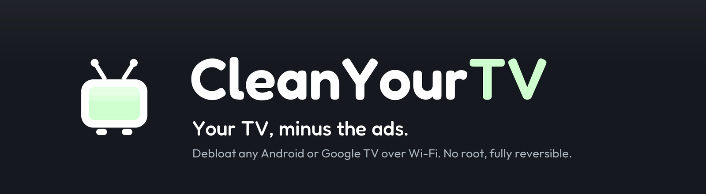

Threads｜CleanYourTV：用 AI 協助整理 Android／Google TV，但先把 ADB、還原與人工核准放在前面

一句話摘要
這則 Threads 分享最吸引人的畫面，是把一台原本充滿推薦內容的電視，改成由遙控器探索的「溫暖客廳」首頁；但支撐它的 CleanYourTV 並非只是換一張桌布，而是會透過 Android Debug Bridge（ADB）讀取裝置狀態、備份、停用部分套件與安裝 launcher 的開源工作流。它適合被視為「可審核的個人設備改造專案」，而不是把 repository 或 Prompt 丟給 AI 後完全放手。
Threads 貼文可直接確認的內容
Moty（mo_riargraphy）分享，自己原先只是想把小米電視含推薦與廣告的首頁換成較乾淨的 Apple TV 風格；貼文提供 CleanYourTV 的 GitHub 連結，並說明自己再以反覆描述互動卡點、動畫想法與成本的方式，讓 AI 協助迭代出一個客廳場景首頁。
在該展示中，YouTube 和 Disney+ 等 App 被做成場景物件；使用者可用遙控器選取並開啟 App，貼文也描述了壁爐音效。這是作者個人完成的視覺／互動設計案例，不代表 CleanYourTV 的預設介面，也不代表每種型號都能重現相同結果。
Threads 頁面還帶出其他相關貼文，提到跨品牌使用、套件數量與社群規模；這些都是社群轉述或擷取當下的觀察，未在本文提升為通用相容性或效果保證。
上游專案可確認的範圍
CleanYourTV 的上游網站與 README 將目標明確寫為 Android TV 與 Google TV。其公開說明的基本路徑是：先保存裝置的套件與設定資料，再針對廠商遙測、廣告或內容服務等候選項目做停用處理，最後建立或安裝較簡潔的 launcher。上游稱核心策略是不需要 root，且以停用而非移除套件為主，並搭配還原工具。
這並不表示它對所有智慧電視都同樣適用：
- Android TV／Google TV 是主要目標。
- Fire TV 的首頁交接受到系統限制；上游將它定位為僅可能處理部分整理工作。
- Samsung Tizen 與 LG webOS 是不同平台，不能把 Android／ADB 的做法直接套用。
- 不同品牌、地區韌體與 Android 版本會影響可停用項目、launcher 安裝與還原結果；上游的機型清單與範例是社群持續變動的資料，而不是官方認證名單。
上游 repository 的 LICENSE 檔案為 MIT License；其中使用的 Outfit 字型另依 SIL Open Font License 1.1。開源授權允許使用與修改，並不等於每個組態、個別 AI 生成修改、影音服務或裝置帳號都已獲得保證。
為什麼這和 AI Coding 有關
貼文展示的價值，不只是「AI 會寫一個好看的首頁」，而是把原本較難進入的原生 Android TV launcher 開發、裝置設定查核與反覆互動設計，拆成可向 coding assistant 描述與驗收的小任務。對有設計想法、但不熟 Android TV 開發的人，這種拆法能降低製作門檻。
但同一個特性也提高了風險：當 coding agent 擁有 shell 存取與 ADB 通道，它不只產出程式碼，還可能改變真實電視的套件狀態、首頁行為、網路除錯狀態與可用功能。介面改造的「看起來可逆」不應取代每一次改動的人工審核。
必須正視的權限與風險
上游 PROMPT.md 與 SECURITY.md 都把 ADB 視為高權限能力：它可連接電視、執行系統層級指令與安裝 launcher。README／安全文件本身也要求先備份、建立還原路徑，並在結束後關閉除錯與撤銷 ADB 授權。
值得特別注意的情境：
- 停用錯誤套件，可能影響 HDMI／電視訊號、輸入來源、藍牙遙控、鍵盤、商店、更新、投放或開機後首頁。
- 若網路 ADB 在家用 LAN 上長時間保持開啟，會擴大同網路裝置嘗試連線的風險。
- 讓具 shell 權限的 AI agent 自動「發現」裝置或批次執行命令，可能超出使用者真正想授權的範圍。
- 額外的主題、add-on、第三方 launcher 或 APK 不是上游自動審核保證；專案官網也提醒要分別閱讀其 README 再側載。
安全採用檢核表
- 先確認電視平台、精確型號、韌體版本與上游對該裝置的限制；不把別人成功的 Xiaomi／TCL 案例推論到自己的電視。
- 先建立可離線保留的備份與可理解的還原方案；在尚未確認可還原前，不動系統或首頁相關套件。
- 將 agent 的權限縮到單次、單一自有設備；每次停用、安裝、預設首頁切換或網路設定變更前，都由人確認實際命令與影響。
- 先保留輸入來源、遙控與藍牙、鍵盤、商店、更新、投放與日常串流服務；改動採小批次，並在每一批後實機驗收。
- 不在公用或不可信任網路開啟 ADB。任務完成後，撤銷授權並關閉除錯；若無法確認關閉與可正常開機／回到原設定，就不要把工作視為完成。
- 對自訂主題與第 3 方 APK，先讀原始碼／說明、核對來源與權限，在非主要設備或可復原環境試跑。不要把主帳號、付款資訊或長效登入 session 交給不明工具。
為什麼值得收進 AI 學習雷達
CleanYourTV 是很好的「AI 從生成內容走向真實裝置操作」案例：AI 可以協助將設計願景變成可執行的 Android TV 專案，但每當它跨越到裝置探索、系統套件、網路除錯或應用安裝時，就必須切換到最小權限、逐項批准、可回復驗收的工程模式。真正可複用的經驗，是把有趣的客廳首頁保留在使用者的掌控之下。
原始與查核連結
- Threads 原始分享連結：
https://www.threads.com/share/BATqKHvjm0/
- Threads canonical URL：
https://www.threads.com/@mo_riargraphy/post/De35gmqAWnA
- CleanYourTV 官方網站：
- CleanYourTV GitHub repository 與 README：
https://github.com/Gathin23/cleanyourtv
- 上游 Prompt（含高權限裝置操作說明，僅供審閱，不應直接無監督執行）：
https://github.com/Gathin23/cleanyourtv/blob/main/PROMPT.md
- 上游安全政策：
https://github.com/Gathin23/cleanyourtv/blob/main/SECURITY.md
- 上游授權：